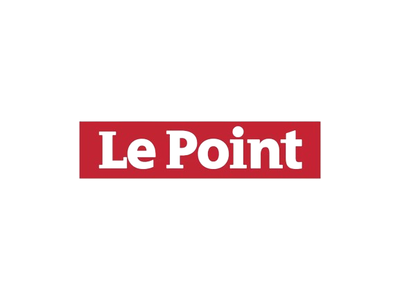
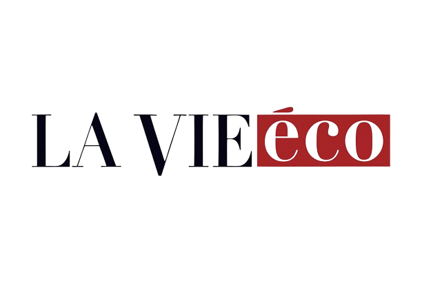
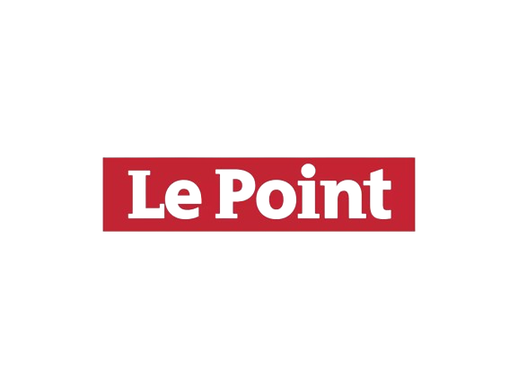
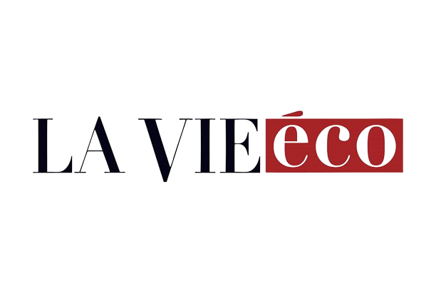
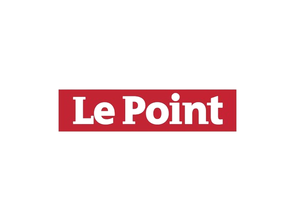
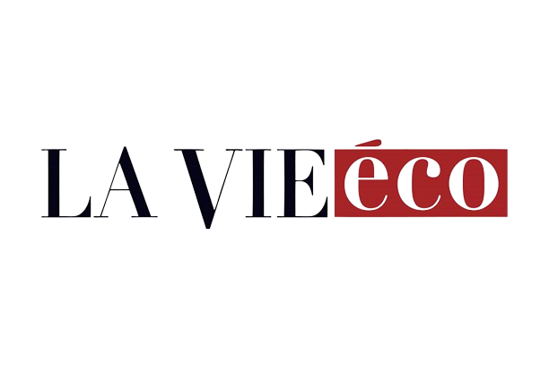

Les sources utilisées :
 



Sentiment Analyser est un outil puissant basé sur une combinaison de deux moteurs NLP, local et importé, pour extraire les sentiments perçus lors de la lecture d'articles de presse. Il cherche ces articles dans des sources fiables préalablement définies, afin de donner une idée de l'impression sur une entreprise cotée à la bourse de Casablanca. En effectuant son analyse, l'outil restitue un graphique de partage de sentiment, un wordcloud donnant une idée des mots les plus fréquemment rencontrés, ainsi qu'une analyse des répercussions potentielles du contenu des articles parcourus sur le cours de l'action en question.

